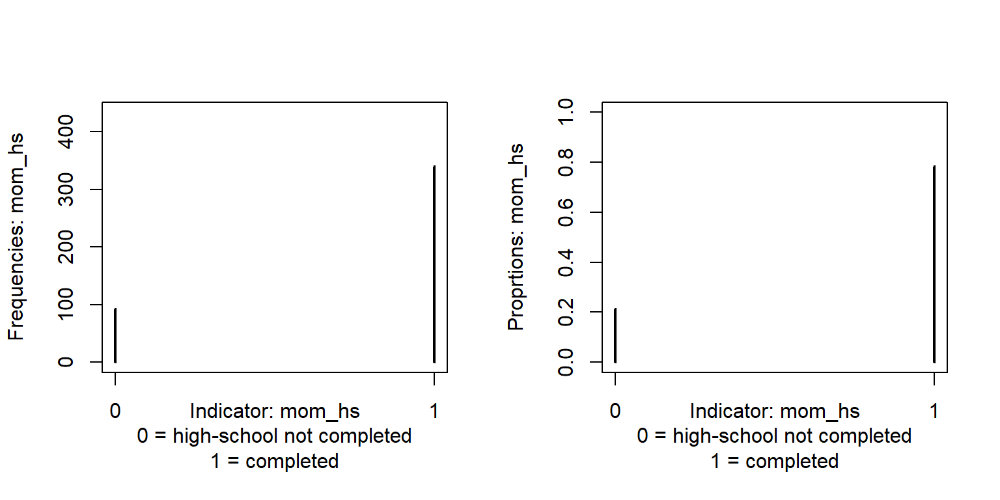
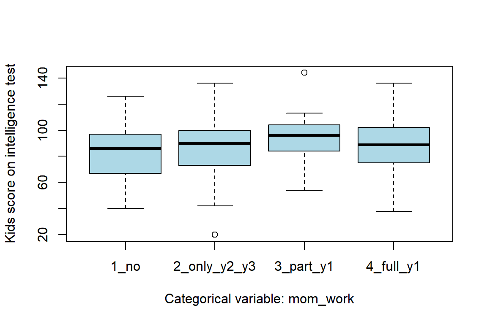
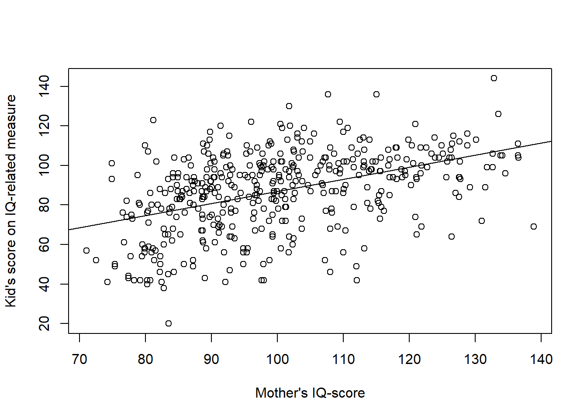
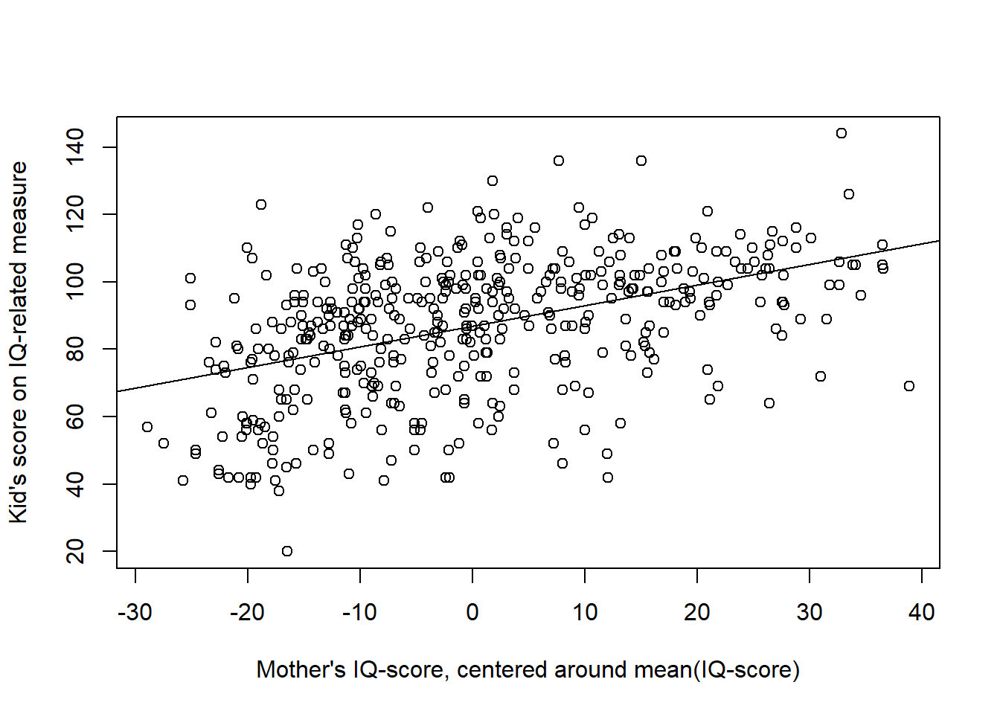
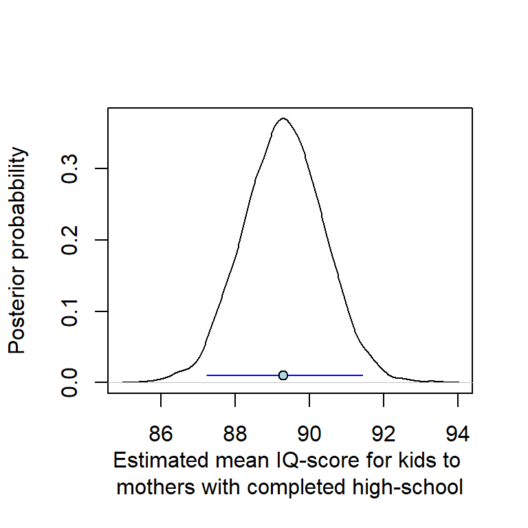
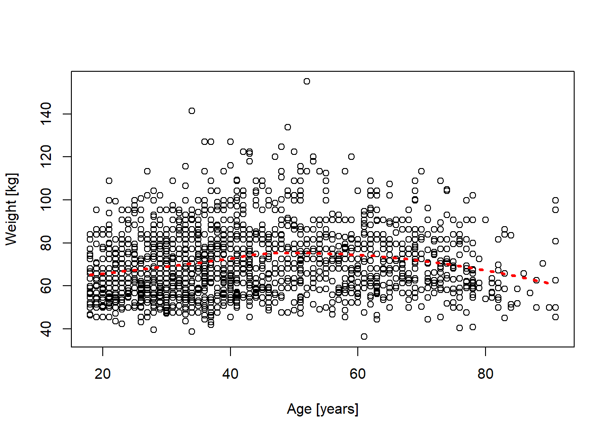
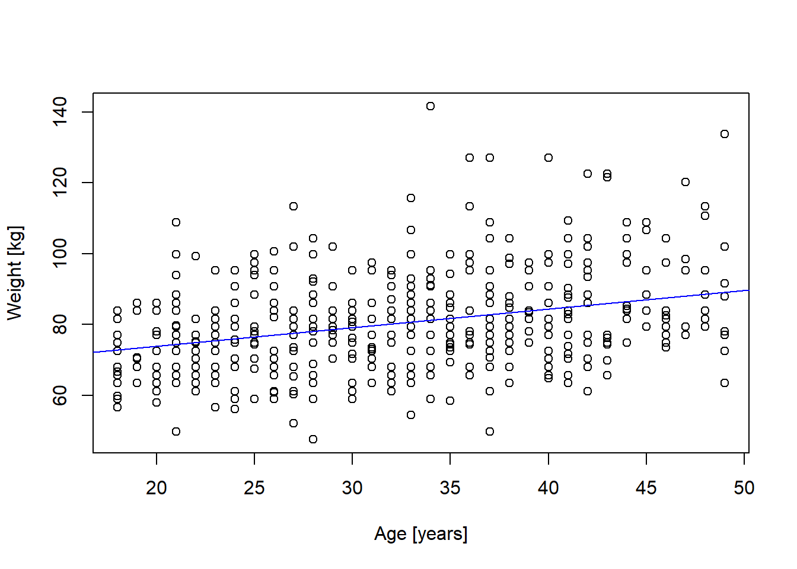

Code
# Load the library "rstanarm" to fit Bayesian linear models using the function
# stan_glm()
library(rstanarm) Load R-libraries
# Load the library "rstanarm" to fit Bayesian linear models using the function
# stan_glm()
library(rstanarm) Readings.
Today we will fit linear models with no or one predictor:
We will illustrate this using data the data set kidiq described below, using kid_score as outcome variable.
We will use the data set in kidiq.txt to illustrate several points below. The data is from a survey of adult American women and their children. Gelman et al. (2021) describe the data set and use it at several places, e.g., pp. 130-136, 156-158, 161, 185-187, and 197.
Code book:
d <- read.table("./datasets/kidiq.txt", sep = ",", header = TRUE)
str(d)'data.frame': 434 obs. of 5 variables:
$ kid_score: int 65 98 85 83 115 98 69 106 102 95 ...
$ mom_hs : int 1 1 1 1 1 0 1 1 1 1 ...
$ mom_iq : num 121.1 89.4 115.4 99.4 92.7 ...
$ mom_work : int 4 4 4 3 4 1 4 3 1 1 ...
$ mom_age : int 27 25 27 25 27 18 20 23 24 19 ...Regression analysis can be used to estimate a population mean and standard deviation from a sample, suing an intercept-only model:
\(y_i \sim N(\mu, \sigma)\)
\(\mu = b_0\), where \(b_0\) is a constant (intercept).
Sample size, mean and standard deviation for the kid_score variable:
sample_stats <- c(n = length(d$kid_score), mean = mean(d$kid_score),
sd = sd(d$kid_score))
round(sample_stats, 1) n mean sd
434.0 86.8 20.4 Here is estimates of population \(\mu\) and \(\sigma\), using stan_glm():
m0 <- stan_glm(kid_score ~ 1, data = d, refresh = 0)
print(m0)stan_glm
family: gaussian [identity]
formula: kid_score ~ 1
observations: 434
predictors: 1
------
Median MAD_SD
(Intercept) 86.8 1.0
Auxiliary parameter(s):
Median MAD_SD
sigma 20.4 0.7
------
* For help interpreting the printed output see ?print.stanreg
* For info on the priors used see ?prior_summary.stanregposterior_interval(m0, prob = 0.95) 2.5% 97.5%
(Intercept) 84.81816 88.74237
sigma 19.13409 21.85210Try lm(), it gives very similar estimates, but it does not provide a compatibility interval around \(\sigma\).
Indicator variables are coded 1 (presence of something) and 0 (absence). In the kidIQ data, moms_hs is an indicator variable coded 1 if the mother completed high school and 0 otherwise. The mean of an indicator variable is the proportion of 1’s, so the mean of mom_hs is the proportion of mothers who completed high-school.
par(mfrow = c(1, 2))
# Plot frequncy table
plot(table(d$mom_hs),
xlab = "Indicator: mom_hs\n0 = high-school not completed\n1 = completed",
ylab = "Frequencies: mom_hs", ylim = c(0, 434))
# Plot proprtion table
plot(table(d$mom_hs)/length(d$mom_hs), # Proportions
xlab = "Indicator: mom_hs\n0 = high-school not completed\n1 = completed",
ylab = "Proprtions: mom_hs",
ylim = c(0, 1))
table(d$mom_hs) # Frequency table
0 1
93 341 round(table(d$mom_hs)/length(d$mom_hs), 3) # Proportions
0 1
0.214 0.786 round(mean(d$mom_hs), 3) # Mean indicator should be the same as proportion 1's[1] 0.786Consider this model:
\(y_i \sim N(\mu_i, \sigma)\)
\(\mu_i = b_0 + b_1D_i\), where \(D_i\) is an indicator variable coded 0 or 1.
The interpretation of the coefficients is simple:
Here applied to outcome variable kid_score (\(y_i\)) and indicator variable moms_hs (\(D_i\)):
# Note: stan_glm() is a method based on data simulation, the seed argument set
# the random number generator
m1 <- stan_glm(kid_score ~ mom_hs, data = d, refresh = 0, seed = 123)
print(m1)stan_glm
family: gaussian [identity]
formula: kid_score ~ mom_hs
observations: 434
predictors: 2
------
Median MAD_SD
(Intercept) 77.5 2.0
mom_hs 11.8 2.3
Auxiliary parameter(s):
Median MAD_SD
sigma 19.9 0.7
------
* For help interpreting the printed output see ?print.stanreg
* For info on the priors used see ?prior_summary.stanregposterior_interval(m1, prob = 0.95) 2.5% 97.5%
(Intercept) 73.40918 81.54022
mom_hs 7.26764 16.36398
sigma 18.64532 21.28927Interpretation: On average, kids to mothers who completed high-school had 12 points higher scores than kids to mothers who did not complete high-school. Our data is compatible with a difference in the population between about 7 - 16 points, given the assumptions of our statistical model (independent observations, normal distributions with equal standard deviations).
Categorical variables code membership in categories for nominal scale variables. In the kidIQ data, the variable mom_work is a nominal variable coding the amount of work of mothers during their kid’s first three years. It is coded 1, 2, 3, and 4 for the four categories described above in the code book. This is a nominal scale value, although it can be discussed whether it also can be interpreted as an ordinal scale, from the least to the most amount of work during the first three years of child’s life (more information would be needed on the definition of the variable to decide this).
The categorical variable mom_work could be coded as three indicator variables, for example:
mom_work = 2 and 0 otherwise,mom_work = 3 and 0 otherwise, andmom_work = 4 and 0 otherwise.The first category, mom_work = 1, would be implied for observations for which \(D_2 = D_3 = D_4 = 0\). In general, a categorical variable with \(k\) categories can be coded with \(k-1\) indicator variables. However, in R it is possible to use a categorical variable (factor) to obtain the same thing. Here a boxplot of kid_score for each category of mom_work
# Make mom_work a factor, and add labels (labels not needed, but helpful)
d$mom_work_f <- factor(d$mom_work,
levels = c(1, 2, 3, 4),
labels = c("1_no", "2_only_y2_y3","3_part_y1", "4_full_y1"))
boxplot(d$kid_score ~ d$mom_work_f, xlab = "Categorical variable: mom_work",
ylab = "Kids score on intelligence test", col = "lightblue")
R will analyse a categorical variable (factor) with \(k\) categories as an analysis with \(k-1\) indicator variables. The analysis will estimate one regression coefficient for each category except the first category (reference). The regression coefficients refer to the mean difference between the group defined by the category and the group defined by the reference category. The intercept estimates the mean of the reference category.
Here an example predicting kid_score from mom_work using stan_glm():
# Use factor, defined previous code block
m2 <- stan_glm(kid_score ~ mom_work_f, data = d, refresh = 0, seed = 123)
print(m2)stan_glm
family: gaussian [identity]
formula: kid_score ~ mom_work_f
observations: 434
predictors: 4
------
Median MAD_SD
(Intercept) 82.1 2.3
mom_work_f2_only_y2_y3 3.7 3.1
mom_work_f3_part_y1 11.4 3.5
mom_work_f4_full_y1 5.2 2.6
Auxiliary parameter(s):
Median MAD_SD
sigma 20.3 0.7
------
* For help interpreting the printed output see ?print.stanreg
* For info on the priors used see ?prior_summary.stanregposterior_interval(m2, prob = 0.95) 2.5% 97.5%
(Intercept) 77.4093836 86.486748
mom_work_f2_only_y2_y3 -2.3954141 9.963632
mom_work_f3_part_y1 4.3567994 18.604737
mom_work_f4_full_y1 -0.1811025 10.592623
sigma 18.9977610 21.716944The reference category (1: no work) had a mean of around 82 points. Categories 2, 3, and, 4 had higher scores the first category, about 4, 11, and 5 points, respectively.
You can change the reference category by redefining the factor:
# Make 4: full-time work the reference category.
d$mom_work_f <- factor(d$mom_work,
levels = c(4, 1, 2, 3),
labels = c("4_full_y1", "1_no", "2_only_y2_y3","3_part_y1"))
m2 <- stan_glm(kid_score ~ mom_work_f, data = d, refresh = 0, seed = 123)
print(m2)stan_glm
family: gaussian [identity]
formula: kid_score ~ mom_work_f
observations: 434
predictors: 4
------
Median MAD_SD
(Intercept) 87.2 1.4
mom_work_f1_no -5.2 2.8
mom_work_f2_only_y2_y3 -1.4 2.5
mom_work_f3_part_y1 6.3 3.1
Auxiliary parameter(s):
Median MAD_SD
sigma 20.2 0.7
------
* For help interpreting the printed output see ?print.stanreg
* For info on the priors used see ?prior_summary.stanregThe reference category (4: full time work) had a mean of around 87 points. Categories 1 and 2 had lower scores than category 4, whereas category 3 had higher scores.
Estimating the relationship between Mothers IQ-score (mom_iq) and kid_score
m3 <- stan_glm(kid_score ~ mom_iq, data = d, refresh = 0, seed = 123)
print(m3)stan_glm
family: gaussian [identity]
formula: kid_score ~ mom_iq
observations: 434
predictors: 2
------
Median MAD_SD
(Intercept) 25.8 5.9
mom_iq 0.6 0.1
Auxiliary parameter(s):
Median MAD_SD
sigma 18.3 0.6
------
* For help interpreting the printed output see ?print.stanreg
* For info on the priors used see ?prior_summary.stanregPlot data and model prediction
# Scatter plot
plot(d$mom_iq, d$kid_score,
xlab = "Mother's IQ-score",
ylab = "Kid's score on IQ-related measure")
abline(m3$coefficients)
In the model above, the intercept = 25.81 is not meaningful as it refer to the kid_score of a kid to a mother with an IQ-score = 0 (an impossible value). Centering the predictor:
d$mom_iq_centered <- d$mom_iq - mean(d$mom_iq)
make the intercept meaningful: It is the kid_score of a kid to a mother with a mean IQ-score. Note that the slope remains the same.
# Center the predictor variable
d$mom_iq_centered <- d$mom_iq - mean(d$mom_iq)
# Fit model
m3center <- stan_glm(kid_score ~ d$mom_iq_centered,
data = d, refresh = 0, seed = 123)
print(m3center)stan_glm
family: gaussian [identity]
formula: kid_score ~ d$mom_iq_centered
observations: 434
predictors: 2
------
Median MAD_SD
(Intercept) 86.8 0.9
d$mom_iq_centered 0.6 0.1
Auxiliary parameter(s):
Median MAD_SD
sigma 18.3 0.6
------
* For help interpreting the printed output see ?print.stanreg
* For info on the priors used see ?prior_summary.stanreg# Scatter plot
plot(d$mom_iq_centered, d$kid_score,
xlab = "Mother's IQ-score, centered around mean(IQ-score)",
ylab = "Kid's score on IQ-related measure")
abline(m3center$coefficients)
A model can often be written in several ways, with different sets of parameters. The models, or parameterizations, are mathematically equivalent, but one parameterization may be more useful than another.
As an example, consider these two parameterizations of the same model:
In parameterization m1, \(b_1\) refer to a difference between means, whereas in m1b, \(b_1\) refer to the mean of observations for which \(D = 1\). In both parameterizations, \(b_0\) refer to the mean of observations for which \(D = 0\).
If your goal is to estimate group means rather than differences between means,
parameterization m1b may be your choice. Note that m1b still assume equal standard deviations. (If you don’t like this assumption, then just fit an intercept-only model separately to each group of kids.)
Here the two versions of the model are fitted using glm():
d$mom_hs0 <- 1 * (d$mom_hs == 0) # New indicator variable
# Model with intercept and one indicators
m1_lm <- glm(kid_score ~ mom_hs, data = d)
# Model with no intercept and two indicators
m1b_lm <- glm(kid_score ~ 0 + mom_hs0 + mom_hs, data = d)
# Model outputs
summary(m1_lm)
Call:
glm(formula = kid_score ~ mom_hs, data = d)
Coefficients:
Estimate Std. Error t value Pr(>|t|)
(Intercept) 77.548 2.059 37.670 < 2e-16 ***
mom_hs 11.771 2.322 5.069 5.96e-07 ***
---
Signif. codes: 0 '***' 0.001 '**' 0.01 '*' 0.05 '.' 0.1 ' ' 1
(Dispersion parameter for gaussian family taken to be 394.1231)
Null deviance: 180386 on 433 degrees of freedom
Residual deviance: 170261 on 432 degrees of freedom
AIC: 3829.5
Number of Fisher Scoring iterations: 2summary(m1b_lm)
Call:
glm(formula = kid_score ~ 0 + mom_hs0 + mom_hs, data = d)
Coefficients:
Estimate Std. Error t value Pr(>|t|)
mom_hs0 77.548 2.059 37.67 <2e-16 ***
mom_hs 89.320 1.075 83.08 <2e-16 ***
---
Signif. codes: 0 '***' 0.001 '**' 0.01 '*' 0.05 '.' 0.1 ' ' 1
(Dispersion parameter for gaussian family taken to be 394.1231)
Null deviance: 3450038 on 434 degrees of freedom
Residual deviance: 170261 on 432 degrees of freedom
AIC: 3829.5
Number of Fisher Scoring iterations: 2You may of course do the same thing with stan_glm(). But it may not be necessary, as you can use it’s parameter estimates to derive new parameters. Here an illustration, using parameter estimates from model m1:
\(y_i \sim N(\mu_i, \sigma)\)
\(\mu_i = b_0 + b_1D_i\),
to derive point estimate and 95 % confidence interval for the mean of the group \(D = 1\), that is, \(b_0 + b_1\), for the kidIQ data.
Samples from the posterior:
# Fit model using glm_stan()
m1 <- stan_glm(kid_score ~ mom_hs, data = d, refresh = 0, seed = 123)
# Save samples from the posterior distribution
samples <- as.data.frame(m1)
names(samples) <- c("b0", "b1", "sigma") # rename column names
# Derive new estimate: b0 + b1
samples$mean_g1 <- samples$b0 + samples$b1
head(samples) b0 b1 sigma mean_g1
1 79.26794 10.223293 19.09675 89.49123
2 80.57249 10.290838 19.24931 90.86332
3 79.01779 9.521749 19.85170 88.53954
4 76.58362 13.120297 20.32644 89.70392
5 77.75065 12.179655 19.70027 89.93030
6 77.85677 12.065890 19.95251 89.92266Estimates from glm_stan():
# median and 95 % CI for group 1 (mom_hs = 1)
g1posterior <- quantile(samples$mean_g1, probs = c(0.025, 0.5, 0.975))
g1posterior 2.5% 50% 97.5%
87.21719 89.30087 91.43292 # Plot posterior, with point estimate and 95 % CI
plot(density(samples$mean_g), main = "",
xlab = "Estimated mean IQ-score for kids to \nmothers with completed high-school",
ylab = "Posterior probabbility")
lines(x = c(g1posterior[1], g1posterior[3]), y = c(0.01, 0.01),
col = "blue")
points(g1posterior[2], 0.01, pch = 21, bg = "lightblue")
The estimated interval is almost identical to the estimates of parameterization m1b using glm() (or stan_glm())
Estimates from glm(kid_score ~ 0 + mom_hs0 + mom_hs, data = d)
m1b <- glm(glm(kid_score ~ 0 + mom_hs0 + mom_hs, data = d))
point_est <- m1b$coefficients[2]
names(point_est) <- ""
ci95lo <- confint(m1b)[2, 1]
ci95hi <- confint(m1b)[2, 2]
m1b_estimates <- c(ci95lo = ci95lo, point_est = point_est, ci95hi = ci95hi)
round(m1b_estimates, 3) ci95lo point_est ci95hi
87.213 89.320 91.427 A similar strategy can be used with categorical variables: by excluding the intercept, regression coefficients refer to mean values for each category. Here illustrated using the four-category variable mom_work as predictor and kid_score as outcome variable, using stan_glm() and lm():
# Model with no intercept yields estimates of means for each category
m2b <- stan_glm(kid_score ~ 0 + mom_work_f, data = d, refresh = 0, seed = 123)
print(m2b)stan_glm
family: gaussian [identity]
formula: kid_score ~ 0 + mom_work_f
observations: 434
predictors: 4
------
Median MAD_SD
mom_work_f4_full_y1 87.2 1.5
mom_work_f1_no 81.9 2.2
mom_work_f2_only_y2_y3 85.9 2.0
mom_work_f3_part_y1 93.5 2.6
Auxiliary parameter(s):
Median MAD_SD
sigma 20.2 0.7
------
* For help interpreting the printed output see ?print.stanreg
* For info on the priors used see ?prior_summary.stanregm2b_lm <- lm(kid_score ~ 0 + mom_work_f, data = d)
summary(m2b_lm)
Call:
lm(formula = kid_score ~ 0 + mom_work_f, data = d)
Residuals:
Min 1Q Median 3Q Max
-65.85 -12.85 2.79 14.15 50.50
Coefficients:
Estimate Std. Error t value Pr(>|t|)
mom_work_f4_full_y1 87.210 1.413 61.72 <2e-16 ***
mom_work_f1_no 82.000 2.305 35.57 <2e-16 ***
mom_work_f2_only_y2_y3 85.854 2.065 41.58 <2e-16 ***
mom_work_f3_part_y1 93.500 2.703 34.59 <2e-16 ***
---
Signif. codes: 0 '***' 0.001 '**' 0.01 '*' 0.05 '.' 0.1 ' ' 1
Residual standard error: 20.23 on 430 degrees of freedom
Multiple R-squared: 0.949, Adjusted R-squared: 0.9485
F-statistic: 2000 on 4 and 430 DF, p-value: < 2.2e-16Compare these estimates to the the sample means for each category:
aggregate(list(kid_score = d$kid_score), list(mom_work = d$mom_work_f), mean) mom_work kid_score
1 4_full_y1 87.20976
2 1_no 82.00000
3 2_only_y2_y3 85.85417
4 3_part_y1 93.50000The practice problems are labeled Easy (E), Medium (M), and Hard (H), (as in McElreath (2020)).
10E1. Load the data in the file earnings.txt. It is data from a survey conducted 1990. This data set is used by Gelman et al. (2021) at several places. Please find a code book for this data set below the Practice section.
10E2. Continue on 10E1, but now estimate the difference in weight between males and females by regressing on an indicator variable. Report point estimate and 90 % compatibility interval.
10E3. Continue on 10E1, but now estimate the difference in weight between groups defined by ethnicity (Blacks, Whites, Hispanics, Other):
10E4. Below is estimated coefficients from glm(). What does the coefficients refer to?
m <- read.table("datasets/earnings.txt", header = TRUE, sep = ",")
m$weight_kg <- m$weight * 0.45359237
m$ethnicity_f <- factor(m$ethnicity)
fit <- glm(weight_kg ~ 0 + ethnicity_f, data = m)
fit
Call: glm(formula = weight_kg ~ 0 + ethnicity_f, data = m)
Coefficients:
ethnicity_fBlack ethnicity_fHispanic ethnicity_fOther
72.63 68.96 64.91
ethnicity_fWhite
70.97
Degrees of Freedom: 1789 Total (i.e. Null); 1785 Residual
(27 observations deleted due to missingness)
Null Deviance: 9434000
Residual Deviance: 438600 AIC: 1493010M1. Below a scatter plot of the relationship between weight [kg] and age [years] from the earnings.txt data (used above in 10E1). The smooth function was added using the loess() function in R.
Based on the plot and the red line, would linear regression seem useful to estimate the relationship?
If you could add one additional predictor to reduce the variability around the regression line, which one would you suggest?
m <- read.table("datasets/earnings.txt", header = TRUE, sep = ",")
m$weight_kg <- m$weight * 0.45359237
plot(m$age, m$weight_kg, xlab = "Age [years]", ylab = "Weight [kg]")
# Fit loess() line // lowess() did not work well here for some reason
loess_fit <- loess(weight_kg ~ age, data = m)
dd <- data.frame(age = seq(18, 90, length.out = 100))
predicted <- predict(loess_fit, newdata = dd)
lines(dd$age, predicted, col = "red", lwd = 3, lty = 3)
10M2. Below a scatter plot of the relationship between weight [kg] and age [years] for males < 50 years old. The line was fitted using linear regression (glm(weight_kg ~ age)).
mm <- m[m$male == 1 & (m$age < 50), c("weight_kg", "age")]
plot(mm$age, mm$weight_kg, xlab = "Age [years]", ylab = "Weight [kg]")
mmfit <- glm(weight_kg ~ age, data = mm)
abline(mmfit, col = "blue")
10M3. Below is a summary of a regression model for the data in 10M2, i.e., for men < 50 years old. This time with the predictor centered at 20 years and expressed in decades: \(age20dec = (age - 20)/10\).
Given an approximate 95 % confidence around the regression coefficient for the age variable
In one sentence, describe how weight and age are related according to the regression model in terms of weight differences per decade, with reference to both point and interval estimate.
Reexpress (b), but now assume a causal relationship between age and weight.
Would you assess the size of the age-effect on weight to be reasonable? Discuss.
mm$age20dec <- (mm$age - 20)/10
mmfit <- glm(weight_kg ~ age20dec, data = mm)
summary(mmfit)
Call:
glm(formula = weight_kg ~ age20dec, data = mm)
Coefficients:
Estimate Std. Error t value Pr(>|t|)
(Intercept) 73.9696 1.0516 70.34 < 2e-16 ***
age20dec 5.2100 0.7127 7.31 1.15e-12 ***
---
Signif. codes: 0 '***' 0.001 '**' 0.01 '*' 0.05 '.' 0.1 ' ' 1
(Dispersion parameter for gaussian family taken to be 173.4478)
Null deviance: 91309 on 474 degrees of freedom
Residual deviance: 82041 on 473 degrees of freedom
AIC: 3801
Number of Fisher Scoring iterations: 210M4. I wanted to explore whether smokers have lower weight than non-smokers. I used the data from above (earnings.txt, full sample) and used linear regression to fit this model:
\[weight_i \sim Normal(\mu_i, \sigma) \\ \mu_i= b_0 + b_1 smoke_i \]
where \(weight\) is in kg and \(smoke\) is an indicator variable coded 1 if current smoker and 0 if not.
Below is a summary of the regression result. This time I used stan_glm() from the rstanarm package.
Explain the meaning of the three estimated parameter values: \(b_0, b_1, \sigma\).
Summarize the result in a single sentence with respect to the hypothesis that smokers have lower weight than non-smokers, refer to both point and interval estimates of the coefficient for smoke. Provide two versions: (1) In terms of differences between groups, and (2) in terms of causal effect.
The result was in the expected direction: smokers had lower weight than non-smokers in this sample. Still, the causal interpretation (b) may still be wrong. Discuss potential confounders (some available in the data set, see code book below).
# Indicator-coded smoking variable: 1 if smoker (<7 cigs a week), 0 if not.
# smokenow in the original data set was defined as 1 for more than 7 cigs per
# week, 2 if not.
m$smoke <- ifelse(m$smokenow == 1, 1, 0)
# Fit model, note: refresh = 0 suppresses output to the console, not needed
smokefit <- rstanarm::stan_glm(weight_kg ~ smoke, data = m, refresh = 0)
print(smokefit)stan_glm
family: gaussian [identity]
formula: weight_kg ~ smoke
observations: 1788
predictors: 2
------
Median MAD_SD
(Intercept) 71.4 0.4
smoke -2.0 0.9
Auxiliary parameter(s):
Median MAD_SD
sigma 15.7 0.3
------
* For help interpreting the printed output see ?print.stanreg
* For info on the priors used see ?prior_summary.stanreg10H1. This exercise is a version of Exercise 7.7 from Gelman et al. (2021):
Draw 100 values of the predictor x from a uniform distribution between 0 and 50. Then simulate 100 observations (\(y_i\), where \(i = 1, 2, ..., 100\)) from this model:
\(y_i \sim Normal(\mu_i = 2 + 5x_i, \sigma = 10)\)
Save x and y in a data frame called fake and fit the model
stan_glm(y ~ x, data = fake) (or use glm() instead).
10H2. This exercise is a version of Exercise 7.8 from Gelman et al. (2021):
Repeat the simulation in 10H1 a thousand times (omit plotting). Check that the coefficient estimates (\(b_0, b_1, \sigma\)) are centered around the true parameter values.
The data set is from a survey on “Work, family, and well-being in the United States” conducted in 1990. Gelman et al. use it as several places, for example, pp. 84-85 and 189-195. The data set provided by Gelman et al. is a selection of variables from the original study, and they have excluded respondents with missing data on height or earnings (see footnote 4, page 84). I managed to reconstruct a code book of the variables in the data set from the surveys code book, available at the Gelman et al’s web site.
Code book
Follow this link to find data Save (Ctrl+S on a PC) to download as text file
sessionInfo()R version 4.4.2 (2024-10-31 ucrt)
Platform: x86_64-w64-mingw32/x64
Running under: Windows 11 x64 (build 26100)
Matrix products: default
locale:
[1] LC_COLLATE=Swedish_Sweden.utf8 LC_CTYPE=Swedish_Sweden.utf8
[3] LC_MONETARY=Swedish_Sweden.utf8 LC_NUMERIC=C
[5] LC_TIME=Swedish_Sweden.utf8
time zone: Europe/Stockholm
tzcode source: internal
attached base packages:
[1] stats graphics grDevices utils datasets methods base
other attached packages:
[1] rstanarm_2.32.1 Rcpp_1.0.14
loaded via a namespace (and not attached):
[1] tidyselect_1.2.1 dplyr_1.1.4 farver_2.1.2
[4] loo_2.8.0 fastmap_1.2.0 tensorA_0.36.2.1
[7] shinystan_2.6.0 promises_1.3.3 shinyjs_2.1.0
[10] digest_0.6.37 mime_0.13 lifecycle_1.0.4
[13] StanHeaders_2.32.10 survival_3.7-0 magrittr_2.0.3
[16] posterior_1.6.1 compiler_4.4.2 rlang_1.1.6
[19] tools_4.4.2 igraph_2.1.4 yaml_2.3.10
[22] knitr_1.50 htmlwidgets_1.6.4 pkgbuild_1.4.8
[25] curl_6.4.0 plyr_1.8.9 RColorBrewer_1.1-3
[28] dygraphs_1.1.1.6 abind_1.4-8 miniUI_0.1.2
[31] grid_4.4.2 stats4_4.4.2 xts_0.14.1
[34] xtable_1.8-4 inline_0.3.21 ggplot2_3.5.2
[37] scales_1.4.0 gtools_3.9.5 MASS_7.3-61
[40] cli_3.6.5 rmarkdown_2.29 reformulas_0.4.1
[43] generics_0.1.4 RcppParallel_5.1.10 rstudioapi_0.17.1
[46] reshape2_1.4.4 minqa_1.2.8 rstan_2.32.7
[49] stringr_1.5.1 shinythemes_1.2.0 splines_4.4.2
[52] bayesplot_1.13.0 parallel_4.4.2 matrixStats_1.5.0
[55] base64enc_0.1-3 vctrs_0.6.5 V8_6.0.4
[58] boot_1.3-31 Matrix_1.7-1 jsonlite_2.0.0
[61] crosstalk_1.2.1 glue_1.8.0 nloptr_2.2.1
[64] codetools_0.2-20 distributional_0.5.0 DT_0.33
[67] stringi_1.8.7 gtable_0.3.6 later_1.4.2
[70] QuickJSR_1.8.0 lme4_1.1-37 tibble_3.3.0
[73] colourpicker_1.3.0 pillar_1.10.2 htmltools_0.5.8.1
[76] R6_2.6.1 Rdpack_2.6.4 evaluate_1.0.3
[79] shiny_1.11.1 lattice_0.22-6 markdown_2.0
[82] rbibutils_2.3 backports_1.5.0 threejs_0.3.4
[85] httpuv_1.6.16 rstantools_2.4.0 gridExtra_2.3
[88] nlme_3.1-166 checkmate_2.3.2 xfun_0.52
[91] zoo_1.8-14 pkgconfig_2.0.3